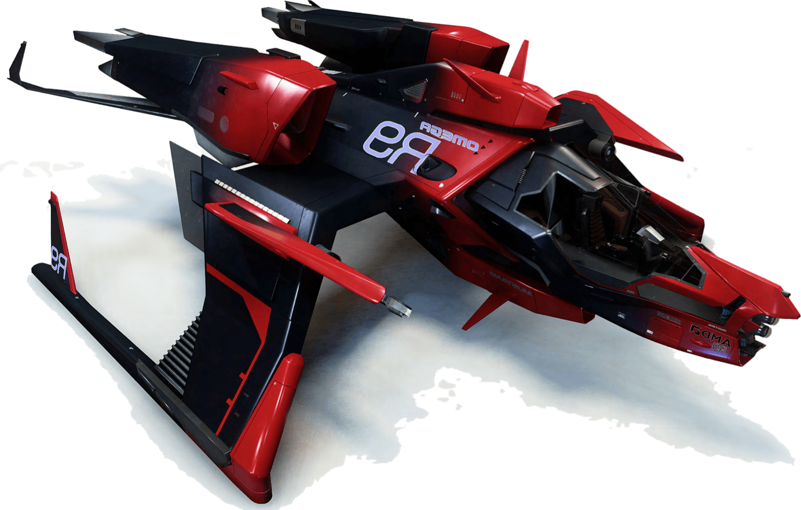
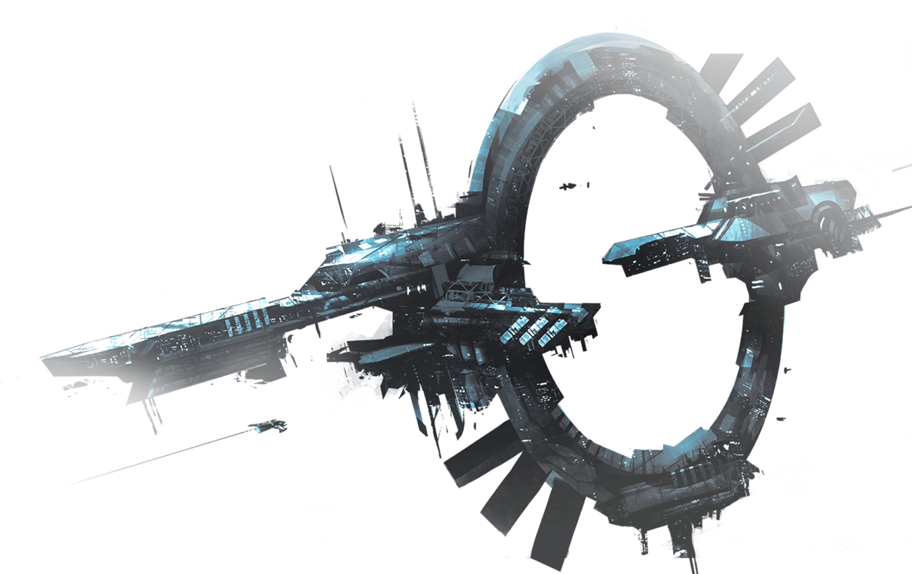

Добро пожаловать во Вселенную Star Citizen «Я не намерен строить игру, Я хочу построить целую вселенную» — Крис Робертс
Идея

Идея создания Star Citizen родилась в голове Криса Робертса, легендарного создателя таких игр как Wing Commander и Freelancer. Являясь на 100% кроудфандинговым проектом, основной целью Star Citizen является создание дышащей, живой Вселенной в лучших традициях научной фантастики с беспрецедентной степенью погружения и мы приглашаем вас следовать за нами на каждом этапе ее создания.
Star Citizen это не просто космический симулятор, шутер от первого лица и больше чем традиционные ММО, Star Citizen это полноценная Вселенная от первого лица, которая обеспечит неограниченные игровые возможности.
Беспрецедентный уровень реализма
Вселенная от первого лица
Уникальная возможность пережить собственное приключение в глубоком космосе. Вместе с Star Citizen вы окажетесь в самом сердце живой дышащей научно-фантастической Вселенной, населенной друзьями, врагами и таящей множество неизвестностей.
Выбор имеет значение
Выбираете свой корабль, выбирайте свою специализацию и выберете своих союзников! Ищите ли вы наилучший апгрейд для двигателя своего Хорнета, или перевозите древние инопланетные артефакты контрабандой через границу с Ши’Анами, любое ваше действие будет влиять на то, как Вселенная Star Citizen будет реагировать на вас
Реальный риск – реальное вознаграждение
Механика жизни и смерти в Star Citizen реализована таким образом, что принимаемые вами решения становятся исключительно важными.Это мир, в котором дополнительный риск может окупиться денежным дождем или обеспечит вам могилу на каком ни будь из астероидов.
Геймплей
Сражения
Моделирование реальной физики взаимодействия означает, что сражения могут быть настолько разнообразными, насколько этого пожелают вовлеченные пилоты.Управляете вашими щитами, электронной сигнатурой вашего корабля, реальным космическим его двигателями, вооружением и десятками других систем корабля!
Исследования
Интуитивный космический полет означает, что исследования могут являться серьезным вызовом! Исследуйте изменчивые прыжковые точки, пролетайте через заброшенные корпуса гигантских кораблей. Проскальзывайте незаметно через туманности, сталкивайтесь лицом к лицу с неизвестными инопланетными расами и многое другое.
Реальная физика

Корабли в Star Citizen не просто выглядят потрясающе, но и летают в соответствии с Ньютоновской физикой! Star Citizen предлагает своим игрокам реальное моделирование физики поведения тел для всех кораблей. Если что-то в Star Citizen летает, то мы точно знаем как именно и почему. В игре представлено множество встроенных моделей полета, которые позволят вам управлять своим кораблем также как в традиционных космосимуляторах, либо сбросить оковы и овладеть маневрами, которые возможны только при нулевой гравитации!